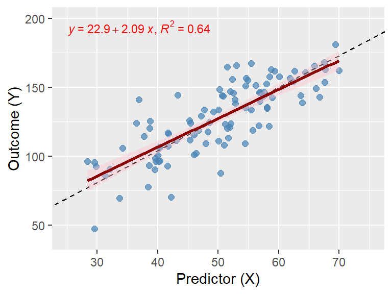

Some principles I use to guide decisions about reproducibility.
Author
Steven J. Pierce
Published
July 26, 2026
Modified
July 26, 2026
This post identifies and discusses a few guiding principles that I use to enhance the reproducibility of my research work. Articulating, understanding, and applying them has helped me to be more systematic, make better decisions, and teach other people how to do reproducible research. I list the principles below and briefly comment on each one. I will tag other blog posts with the names of specific principles that are relevant to them.
Collaboration
Reproducible research is a form of collaboration because it requires you to share your research compendium (Marwick et al., 2018) with other scientists who will use them to verify your findings or extend them with alternate analyses. If you had a new teammate joining your research study, you would probably invest some effort in orienting them to what you are doing so they can collaborate with you on the work. Effective collaborations require clear communication about the study aims, design, research questions, hypotheses, measures, data, and methods. Developing a shared understanding of those elements allows each team member to perform their role in the project.
People trying to reproduce your results have a specific role to fulfill that also requires a thorough understanding of your study. Simply put, independent researchers using your materials are engaged in a post-publication quality assessment of your study and findings. Thinking about reproducibility as a collaboration with people you haven’t met (and may never meet) encourages you to prepare and share materials that will make the relevant elements of your work accessible to them.
Organization
Organization simplifies communicating to others how to reproduce your work. A poorly organized research compendium will be harder to understand and use. Adopting a consistent, coherent organizational structure for a research compendium and the individual files it contains will be beneficial. For example, the conventions for R package structure may be useful because they provide a standardized set of key subfolders and files that is a widely used and compatible with the purpose of a compendium.
Adding a README file or vignette that explicitly explains how a compendium is organized is incredibly valuable. Individual Quarto scripts can be organized by placing code chunks in a sensible order, then adding meaningful and clear section headings and narrative text in appropriate locations. The resulting code and output will then be easier for other people to understand.
Flowcharts that illustrate the relationships between files are a great organizational tool. So are production scripts that help people render your data management and analysis scripts in the correct order.
Automation
Automation helps us achieve efficiency and accuracy because scripts can be faster and more reliable than manual processes. My experience has been that developing high-quality research products requires frequent testing. Eliminating manual steps by writing code to automate tasks helps avoid inconsistencies that may creep into the work when you have complex processes that you have to execute manually. When people are impatient, fatigued, bored, or distracted, their ability to consistently do a complex task the exact same way each time decreases. That’s an opportunity for errors that may have undesirable effects on your work.
Well-written scripts will take advantage of the inhuman patience and processing speed of computers. They also document exactly what happened in a way that is often not done for manual steps in processes (a fact which touches on the preservation principle discussed below). R (R Development Core Team, 2026) is a powerful programming language for statistical computing. You can automate many tedious, time-consuming tasks with clever R code, though that may require delving into the deeper mysteries of coding (such as using regular expressions).
Preservation
The preservation principle guides us to keep our raw data pristine and to keep a good audit trail. One purpose of the compendium is to preserve a record of how research was done. That requires preserving both the raw data and the code used to process it. Version control for files is a crucial tool for preserving the history of a project and how it changed throughout its development. Software tools like Git (Torvalds et al., 2026) are valuable because they help you log what changed, when, why, and who made the changes. The ability they provide to recover earlier states of the code if necessary protects you against some kinds of errors and misfortunes.
Integration
The integration principle emphasizes keeping things together to enhance reproducibility and clarity. It suggests building documentation directly into data files, putting comments in code, and using code to directly insert statistical results into reports. The dynamic documents that you can write with Quarto (Allaire et al., 2026) provide a way to do the latter task.
Separation
The separation principle helps us manage complexity by splitting projects or tasks into pieces; for example separating data management from analysis, or keeping raw data separate from working data files used for specific analyses. Similarly, we might want to separate data from code, code from output, and differentiate draft output from production output.
Making Decisions When Principles Conflict
Adhering to one principle may conflict with the demands of another principle. Recognizing that such a conflict exists should prompt you to step back and assess your options for how to do something and consider which approach offers the better balance of the relevant principles. Creative solutions may sometimes even allow you to satisfy all the of them at once but when that is impossible, you just need to make a priority call on which principle matters more in the context of a specific project. Sometimes a third principle provides the basis for resolving a conflict between two other principles.
One can see the obvious potential for conflict between the integration and separation principles. For example, the integration principle might suggest keeping the code used to generate a figure in an output file alongside the actual result so readers can see how it was obtained. The separation principle pushes in a different direction: separate your source code from the output.
One thing I like about Quarto is the ability to configure whether code chunks from the source script are echoed into the resulting output file. If I’m writing an HTML output file, echoing code chunks into the output with code folding enabled collapses the chunk contents down to Code buttons by default that don’t take up much space. Below is an example.
Code
# Load library (install first via install.packages("tidyverse") if needed)library(tidyverse)library(ggpmisc) # for stat_poly_eq()# Create simulated data: predictor x, residual error term, & outcome y.# Define true population parameters as intercept = 12, slope = 2.3. set.seed(8436) n <-100sim_data <-tibble(x =rnorm(n, mean =50, sd =10),error =rnorm(n, mean =0, sd =15), y =12+2.3* x + error) # Fit the linear regression modelsim_model <-lm(y ~ x, data = sim_data)# Plot the data plus true and estimated regression lines.ggplot(sim_data, aes(x = x, y = y)) +geom_point(color ="steelblue", alpha =0.7, size =2) +geom_abline(intercept =12, slope =2.3, linetype ="dashed") +geom_smooth(method ="lm", formula = y ~ x, color ="darkred", fill ="pink", se =TRUE) +# Annotate the plot with the estimated regression equation and R-squared. stat_poly_eq(aes(label =paste(after_stat(eq.label), after_stat(rr.label), sep ="*\", \"*")), size =3, col ="red", parse =TRUE) +coord_cartesian(xlim =c(25, 75), ylim =c(40,200)) +labs(x ="Predictor (X)",y ="Outcome (Y)")

Figure 1: Simulated Linear Regression Plot to Demonstrate Code Folding. The dashed reference line is the true population relationship (\(Y = \beta_0 + \beta_1X = 12 + 2.3X\)).
Readers who want to can toggle a Code button to expand a chunk temporarily to see the code. Other readers may just skip past those buttons to focus on the figure itself. In a sense, Quarto leverages the organization principle to give me a way to solve the competing demands of integration and separation. The code chunk is integrated into the output file but separated from the resulting figure and surrounding text and we have the option to make it unobtrusive.
References
Allaire, J. J., Dervieux, C., Scheidegger, C., Teague, C., & Xie, Y. (2026). Quarto (1.10.18) [Computer Program]. Posit Software, PBC. https://quarto.org
Marwick, B., Boettiger, C., & Mullen, L. (2018). Packaging data analytical work reproducibly using R (and friends). The American Statistician, 72(1), 80–88. https://doi.org/10.1080/00031305.2017.1375986
R Development Core Team. (2026). R: A language and environment for statistical computing (4.6.1) [Computer Program]. R Foundation for Statistical Computing. http://www.R-project.org
Torvalds, L., Hamano, J. C., & other contributors to the Git Project. (2026). Git for Windows (2.55.0(3)) [Computer Program]. Software Freedom Conservancy. https://git-scm.com
![]()